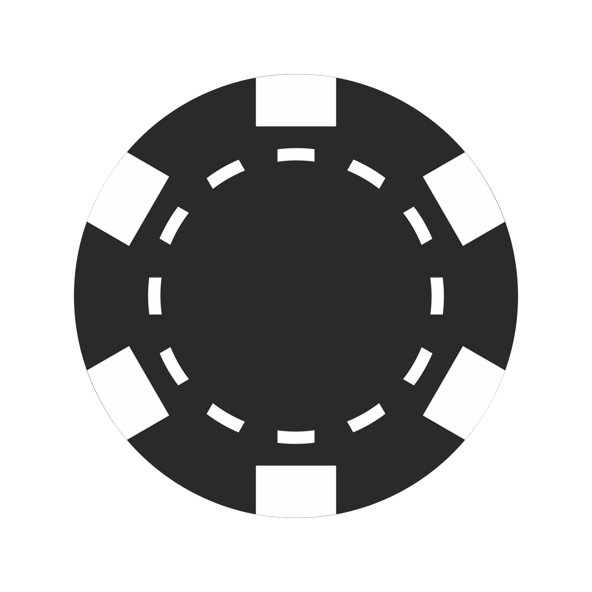
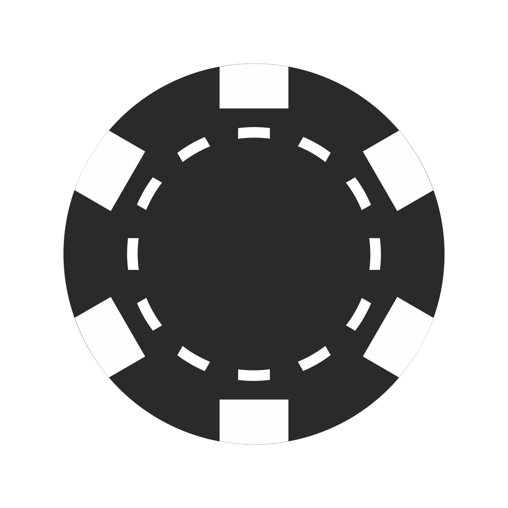

Both poker and basketball require a combination of skill, strategy, and
mental toughness. While they may seem like very different games, many of
the psychological and strategic elements overlap. This page explores how
the skills used in poker can be applied to basketball, and vice versa.
Decision-Making
In both poker and basketball, quick and accurate decision-making is
crucial. Whether it's deciding to take a shot or fold a hand, players
need to weigh their options and choose the best course of action.
Risk Management
Both games involve risk management. Poker players often have to decide
when to bet big and when to hold back, just like basketball players must
decide when to take a high-risk shot or pass to a teammate.
Psychological Aspects
Reading opponents and staying calm under pressure are key components of
both poker and basketball. Players must understand their opponents'
strategies and tendencies while maintaining composure.
Strategy
Both poker and basketball involve complex strategies. In poker, this
might mean playing aggressively or passively based on the situation. In
basketball, it could involve offensive and defensive tactics tailored to
exploit the opponent's weaknesses.
Conclusion
Mastering decision-making, risk management, psychological insight, and
strategic planning can make one a better player in both poker and
basketball. These skills are universally valuable, bridging the gap
between the poker table and the basketball court.
 
